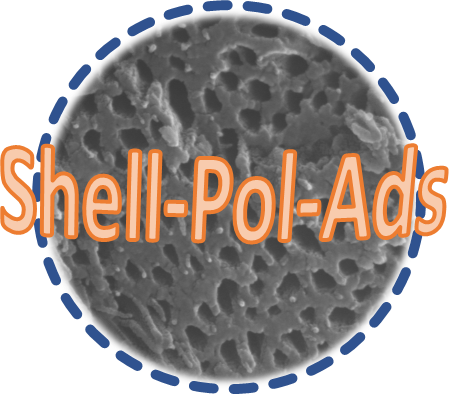
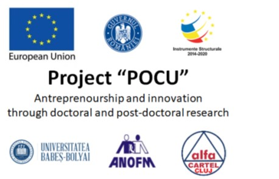
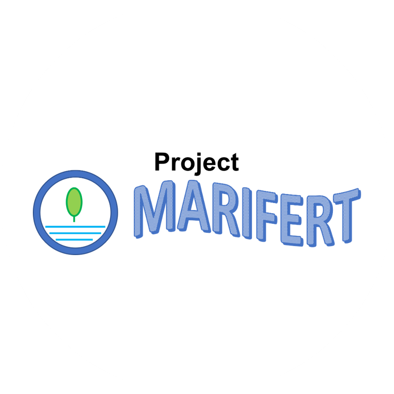
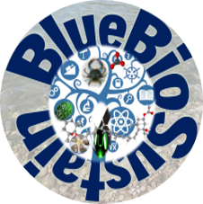
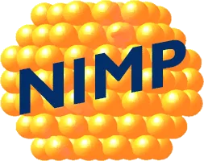
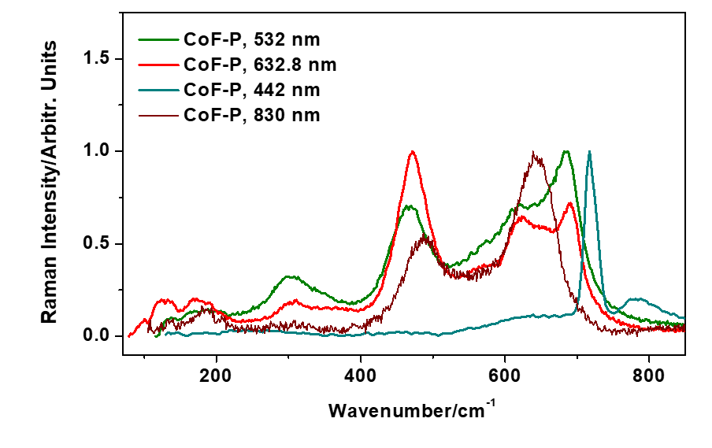
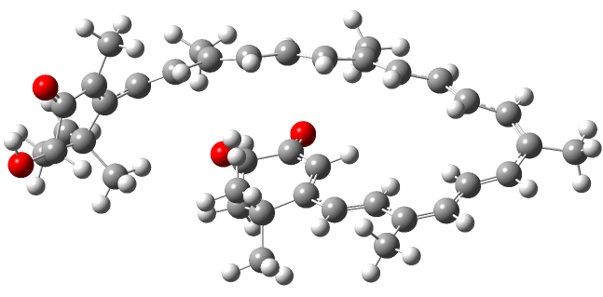
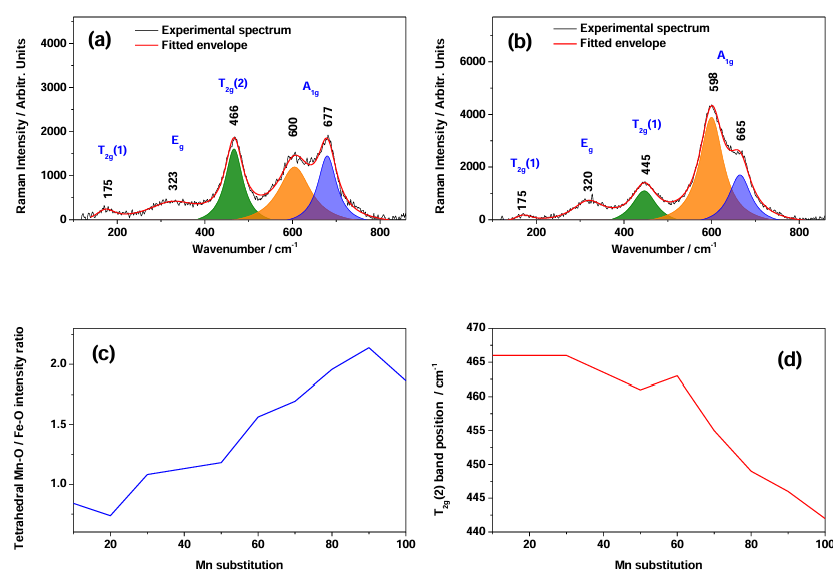

| Projects conducted by the PL | ||
|---|---|---|
 |
 |
 |
| Shell-Pol-Ads a Post-doc type project; national competition |
POCU antrepreneurship and innovation institutional programme comprising individual research programmes awarded through internal UBB competition |
MARIFERT Grant for Young Researchers internal UBB call |
| Projects PL was a team member | ||
|---|---|---|
 |
 |
|
| BlueBioSustain a PED type project awarded to Prof. Cinta Pinzzaruthrough national competition |
ZnoFluoSERS a TE type project awarded to Dr. Falamas through national competition |
Project "SANOMAT" a PCCDI type project awarded to Dr. Stan through national competition |
| Manuscripts in advanced stages | ||
|---|---|---|
 |
 |
 |
| Advanced draft 2.7.2026 Wavelength-dependent differential excitation of cobalt ferrite and implications for Raman spectroscopy structural quality control |
Advanced draft 30.6.2026 Resonant versus non-resonant excitation as a probe of enhancement mechanisms in astaxanthin SERS on a silver (film-over-nanosphere) substrate |
Method file 4.5.2025 Determinarea distribu?iei ocuparii siturilor în nanoparticulele de oxid de fier utilizând spectroscopia Raman |